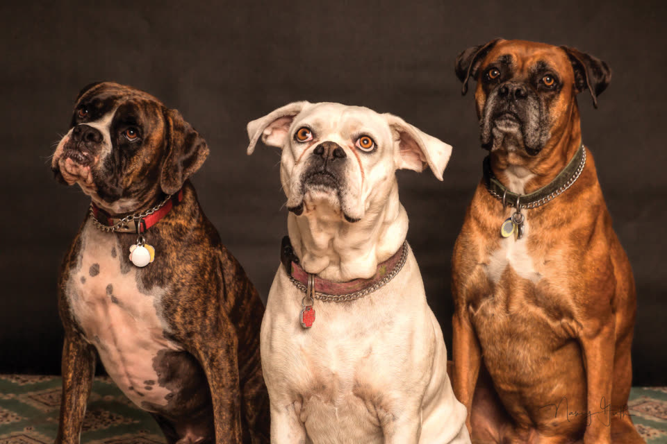

Clínica e Urgência
Acolhimento rápido a qualquer hora do dia ou da noite, com avaliação imediata no local.
714 avaliações no Google · Aldeota
Clínica geral, cirurgia ortopédica e internação monitorada na Av. Antônio Sales, com equipe pronta para consultas de rotina e urgências.

Estrutura completa
Acolhimento rápido a qualquer hora do dia ou da noite, com avaliação imediata no local.
Procedimentos ortopédicos e acompanhamento pós-operatório com foco em mobilidade e conforto.
Acompanhamento constante para pacientes que exigem observação, medicação e suporte contínuo.
Check-ups periódicos e calendário vacinal atualizado com agendamento direto pelo WhatsApp.
Onde estamos